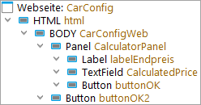
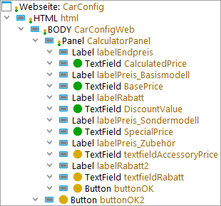
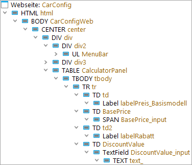

| Version 6.0.3 |
Die zentrale Funktionalität eines GUI Testwerkzeuges ist die Wiedererkennung der grafischen Komponenten. QF-Test bietet hierfür eine Vielzahl an Konfigurationsmöglichkeiten. Dieser Abschnitt gibt einen Überblick über die gebräuchlichsten Strategien und Einstellungen, um die Komponentenerkennung so stabil wie möglich zu gestalten.
Hinweis Sie sollten die Strategie zur Komponentenerkennung vor dem breiten Einsatz von QF-Test in Ihrem Projekt festlegen. Andernfalls kann die Wartung von Tests größere Aufwände verursachen.
Die Wiedererkennung von Komponenten im SUT beim Abspielen eines Tests ist sehr komplex. Die Herausforderung ist, dass sich die Oberfläche des SUT schon bei normaler Bedienung ständig verändern kann. Fenster werden geöffnet und geschlossen oder in der Größe variiert, wodurch sich die Position und Größe der darin enthaltenen Komponenten ändert. Menüs und Comboboxen werden auf- und zugeklappt, Komponenten werden hinzugefügt oder entfernt, sichtbar oder unsichtbar, aktiviert oder gesperrt. Darüber hinaus wird sich die zu testende Anwendung selbst im Lauf der Zeit weiterentwickeln, was sich auch in Veränderungen an der Oberfläche widerspiegelt. Auf all diese Änderungen muss QF-Test flexibel reagieren und Komponenten so zuverlässig wie möglich zuordnen können.
Dies gelingt QF-Test bereits in vielen Fällen mit den Standardeinstellungen. QF-Test verwendet einen intelligenten, auf Wahrscheinlichkeiten basierenden Algorithmus um eine möglichst stabile und fehlertolerante Komponentenerkennung zu erreichen. Es wertet die in Für die Komponentenerkennung stehen die folgenden Kriterien zur Verfügung: genannten Attribute aus und gewichtet sie. Sind jedoch keine guten Erkennungsattribute vorhanden, tut sich der beste Algorithmus schwer. Für diesen Fall gibt es Konfigurations- und Optimierungsmöglichkeiten, die im Welche Optimierungsmöglichkeiten gibt es? erläutert werden.
Die erste Frage ist, ob die Standardeinstellungen bereits ausreichen, also:
Dieser Abschnitt soll Sie in die Lage versetzen zu beurteilen, ob die aktuelle Komponentenerkennung aller Voraussicht nach robust sein wird.
Wichtige Elemente einer robusten Komponentenerkennung sind:
In den meisten Fällen sind die Klasse und der Name die robustesten Kriterien für die Wiedererkennung. (In selteneren Fällen ändern sie sich aber von einer Version der Anwendung zur nächsten. Diesen unschönen Fall betrachten wir in Welche Optimierungsmöglichkeiten gibt es?, Punkt 2.) Erfahrungsgemäß ändert sich die Beschriftung der Komponente ebenfalls selten und ist somit auch gut geeignet. Ausführliche Informationen zu allen Erkennungsmerkmalen finden Sie in Wiedererkennungskriterien.
Bei der Klasse versucht QF-Test aus der vom Entwickler verwendeten Klasse abzuleiten, welche Funktionalität eine Komponente besitzt. Basierend auf dieser generischen Klasse optimiert QF-Test die Aufnahme und bietet funktionsspezifische Checks (zum Beispiel den Check einer ganzen Zeile für eine Tabelle) an.
Als erstes wollen wir Ihnen zeigen wie Sie an Hand der aufgenommenen 'Komponente' Knoten schnell erkennen, ob generische Klassen erkannt wurden und ob Namen oder Beschriftungen vorhanden sind.
|
|  | ||
|
| Abbildung 5.5: Komponentenbaum 1 | ||
Die Klasse ist der schwarze Text der 'Komponente' Knoten. Wenn die
Klasse mit einem Großbuchstaben, gefolgt von einem Kleinbuchstaben beginnt, handelt
es sich im Allgemeinen um eine der Generische Klassen, zum
Beispiel Button. Wenn die Klasse bei Browser-Elementen nur aus
Großbuchstaben besteht, konnte QF-Test die Funktionalität nicht ermitteln.
Im Beispiel HTML und BODY.
Ob Namen oder Beschriftungen vorhanden sind, lässt sich an den braunen Texten ablesen. Hierbei handelt es sich um die 'QF-Test ID' der Komponente, die folgende Rückschlüsse zulässt:
CalculatorPanel und CalculatedPrice)
oder, wenn keine generische Klasse erkannt wurde, dass eine Beschriftung
(Merkmal oder qfs:label)
vorhanden ist. Im Beispiel CarConfigWeb.
labelEndpreis und buttonOK.
html.
Dieser Algorithmus ist auch in Abschnitt 44.2 beschrieben.
 Eine gewisse Hierarchie bei den Komponenten ist bei der Wiedererkennung hilfreich.
Problematisch sind nur tiefe Verschachtelungen. Für die Komponentenerkennung sind
nur wenige Hierarchieebenen tatsächlich relevant. Die anderen können ignoriert werden.
Das Video 'Die Explosion der
Komplexität in der Web Testautomatisierung eindämmen' zeigt
die Problematik von tiefen Verschachtelungen sehr anschaulich - und auch Lösungen dazu.
Obiges Beispiel hat nur eine geringe Hierarchietiefe. Dies ist optimal.
Eine gewisse Hierarchie bei den Komponenten ist bei der Wiedererkennung hilfreich.
Problematisch sind nur tiefe Verschachtelungen. Für die Komponentenerkennung sind
nur wenige Hierarchieebenen tatsächlich relevant. Die anderen können ignoriert werden.
Das Video 'Die Explosion der
Komplexität in der Web Testautomatisierung eindämmen' zeigt
die Problematik von tiefen Verschachtelungen sehr anschaulich - und auch Lösungen dazu.
Obiges Beispiel hat nur eine geringe Hierarchietiefe. Dies ist optimal.
Hinweis Für die Erstellung des Komponentenbaums im obigen Beispiel waren folgende Optionen in der Rubrik »Aufnahme«-»Komponenten« gesetzt:
Niemals, was ebenfalls
der Standardeinstellung entspricht.
Die Optionen öffnen Sie über den Menüpunkt »Bearbeiten«-»Optionen«
Alternativ zur Auswertung der 'QF-Test ID' im Komponentenbaum können Sie sich über
die QF-Test Suche alle Komponenten mit Namen auflisten lassen. Setzen Sie hierzu
im Suchdialog Im Attribut auf Name sowie Knotentyp
auf Komponente und klicken Sie dann Ergebnisliste anzeigen.
Wenn Sie eine Aufnahme ausführen, werden die Komponenten, mit denen Sie
interagieren, automatisch aufgenommen. Um jedoch alle Komponenten für die Analyse auf einmal
aufzunehmen, wählen Sie »Aufnahme«-»Komponenten aufnehmen«. Dann im GUI einen
Rechtsklick ausführen und Ganzes Fenster wählen.
(Nach der Analyse sinnvollerweise wieder löschen, um nicht unnötig Ballast herumzuschleppen.)
Hier noch zwei Beispielkomponentenbäume mit Bewertung wie robust die Komponentenerkennung ist.
|
|  | ||
|
| Abbildung 5.6: Stabile Komponentenerkennung - Beispiel 1 | ||
Positiv: Generische Klassen werden erkannt: MenuBar,
TabPanel, Panel, Label und TextField.
Positiv: Für die grün markierten TextFields konnten Namen ermittelt werden,
erkennbar daran, dass die 'QF-Test ID' (brauner Text) nicht mit der Klasse beginnt,
zum Beispiel BasePrice.
Positiv: Für die gelb markierten TextFields und Buttons konnten zwar keine Namen
ermittelt werden, erkennbar daran, dass die 'QF-Test ID' (brauner Text) mit der
Klasse (textfield, button) beginnt. Aber der zweite Teil
der 'QF-Test ID' zeigt, dass zumindest eine Beschriftung gefunden wurde.
Unwichtig: Die Label haben keine Namen. Sie sind aber selten testrelevant.
Unwichtig: die Container 'HTML' und 'BODY' haben keine generische Klasse. Man könnte sie auf Panel mappen. In diesem Fall würde das aber weder die Wiedererkennung verbessern noch zusätzliche Funktionalität seitens QF-Test (z.B. zusätzliche Checks für die Check-Aufnahme) bringen.
Positiv: Außer BODY keine überflüssigen Container.
|
|  | ||
|
| Abbildung 5.7: Stabile Komponentenerkennung - Beispiel 2 | ||
Positiv: Für die die testrelevanten Komponenten konnte Name oder Beschriftung
ermittelt werden,
erkennbar daran, dass die 'QF-Test ID' (brauner Text) nicht mit der Klasse beginnt,
zum Beispiel BasePrice und DiscountValue_input.
Negativ: es werden nur für wenige Komponenten generischen Klassen erkannt.
Hier fehlt ein Komponenten-Mapping mit dem Custom Web Resolver,
siehe Verbesserte Komponentenerkennung mittels CustomWebResolver.
Negativ: Überflüssige Hierarchieebenen. Die DIV, TR
TD, CENTER und TABLE Komponenten sollten als
Panel gemappt (siehe Die Prozedur installCustomWebResolver) oder ignoriert
werden (siehe installCustomWebResolver - Parameter, Parameter
ignoreTags).
Wenn für die relevanten Komponenten generische Klassen und Namen vorhanden sind, können Sie in den allermeisten Fällen davon ausgehen, dass die Komponentenerkennung robust ist, und den Rest dieses Abschnitts überspringen.
Wenn es Probleme bei der Wiedererkennung gibt, gilt es zwei grundsätzlich unterschiedliche Fälle zu betrachten:
Hier gibt es mehrere Möglichkeiten:
installCustomWebResolver beschrieben, durchführen.
Wenn dies nicht zu ausreichender Stabilität führt, dann in diesem Abschnitt weiterlesen.
Es wurden Komponentenbezeichner vergeben, diese sind aber über die Anwendungsversionen hinweg nicht stabil. In diesem Fall ist es besser, die Bezeichner mittels Resolver zu entfernen und mit den übrigen Erkennungskriterien zu arbeiten, wenn durch die Entwickler keine stabilen Bezeichner gesetzt werden können.
Bei Webanwendungen kann eine entsprechende Einstellung im Parameter
'customIdAttributes' (siehe installCustomWebResolver - Parameter)
weiterhelfen.
Es wurden keine Komponentenbezeichner vergeben und die übrigen Kriterien sind nicht ausreichend stabil. Hier lohnt es sich auch oft, mit der Entwicklung Kontakt aufzunehmen und ihnen die Relevanz von Komponentenbezeichnern für Regressionstests zu erläutern - beziehungsweise denjenigen, der budgetmäßig für Entwicklung und Testung verantwortlich ist, zu überzeugen, dass ein geringer Mehraufwand in der Entwicklung für das Einpflegen der Bezeichner eine deutliche Aufwandsreduzierung in der Testabteilung bedeuten kann.
Wenn dies nicht möglich ist, gibt es manchmal stabile Wiedererkennungskriterien, die QF-Test aber nicht standardmäßig nutzt, die man über einen Namenresolver (siehe Abschnitt 50.1.6) bekannt geben kann.
installCustomWebResolver - Parameter)
eingestellt werden.
Es gibt keinen Namen und der Standardalgorithmus von QF-Test erkennt kein Merkmal oder weiteres Merkmal 'qfs:label', obwohl Kandidaten dafür vorhanden wären. Hier können Sie die Beschriftungen mittels FeatureResolver (siehe Abschnitt 50.1.9) bzw. ExtraFeaturesResolver (siehe Abschnitt 50.1.10) bekannt geben.
Web-Komponenten verfügen manchmal über ein Attribut, das
als Beschriftung genutzt werden kann. Dies kann im Custom Web Resolver
im Parameter 'attributesToQftFeature' bekannt gegeben werden
(siehe installCustomWebResolver - Parameter).
Die Komponente an sich ist stabil, aber einer der Container, in denen sie liegt, ist nicht stabil. Hier können reguläre Ausdrücke oder Resolver für die betroffenen Containern Abhilfe schaffen. Wenn alle testrelevanten Komponenten Namen besitzen, kann auch die Option Gewichtung von Namen (Aufnahme) in der Rubrik »Aufnahme«-»Komponenten«-»Gewichtung von Namen« auf "Name übertrifft alles" gesetzt werden.
Hier bietet sich auch der Einsatz von SmartIDs an.
Die Komponente an sich ist stabil, aber die Hierarchie, in der sie liegt, ist nicht stabil, weil Container verschwinden oder hinzukommen. Wenn alle Komponenten, die testrelevant sind, Namen besitzen, kann auch hier die Option Gewichtung von Namen (Aufnahme) in der Rubrik »Aufnahme«-»Komponenten«-»Gewichtung von Namen« auf "Name übertrifft alles" gesetzt werden.
Alternativ kann im Komponentenbaum die Komponente in der Hierarchie weiter nach oben gebracht werden, so dass die instabilen Container keinen Einfluss mehr haben.
Auch hier bietet sich der Einsatz von SmartIDs an.
| Letzte Änderung: 6.9.2022 Copyright © 1999-2022 Quality First Software GmbH |